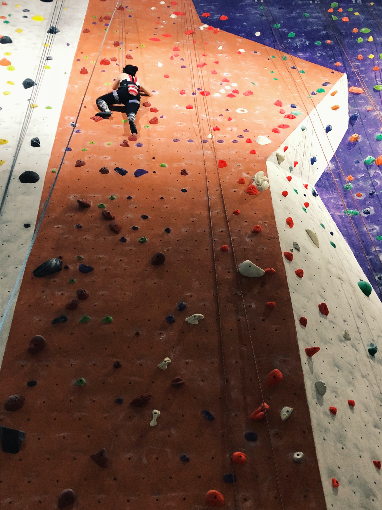
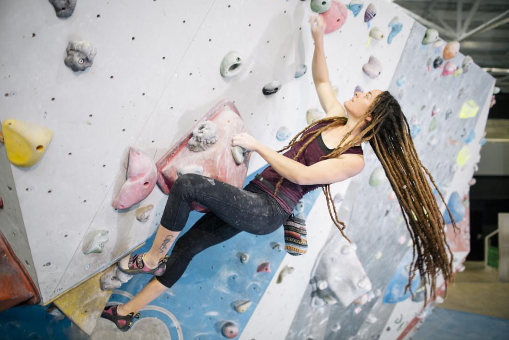
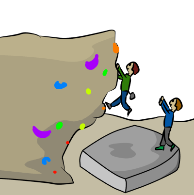
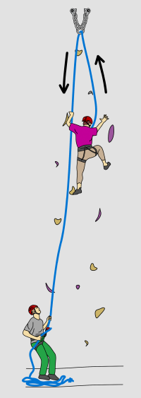
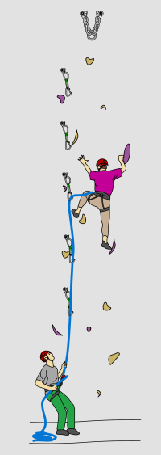

Climbing offers a unique combination of physical and mental health benefits.
Regular climbing can improve your overall stamina. Evidence shows that physical activity of any kind can help people with mental health conditions like depression and anxiety. Climbing involves concentration and thought, as well as physical exercise.

Get Started with Climbing
A growing number of people in search of a new sport are taking up climbing. Despite its image as an athletic sport, beginners will find it easy to get started.
Almost anyone can begin climbing. Most people start indoors at climbing walls. These offer ease of access, are subject to health and safety requirements and are not dependent on weather conditions. Here's a short list of indoor climbing forms that are a great way to get started with this discipline:
Bouldering
Bouldering is a form of climbing involving short routes at low heights. It is performed on small rock formations, such as large boulders, without the use of a harness or rope. Climbing is done over a crash pad to reduce the possibility of serious injury if the climber falls.

Bouldering
Climbing
Top Roping
Top roping is where the climbing rope is already in place. The rope is threaded through an anchor at the top of the climbing wall. The person climbing "ties in" to one end of the rope, and the belayer manages the other end of the rope, taking in the slack as the climber ascends the climbing wall.

Top Roping
Lead Climbing
Lead climbing is a more advanced technique where the climber manages the rope themselves as they climb, clipping it as they move up the route (so it is not already threaded through an anchor before they start climbing). The belayer also needs to work in a more advanced way, ensuring the climber has enough rope to reach and clip safely but also not too much rope in case the climber falls.

Lead Climbing
Free Climbing
Free climbing is a form of rock climbing in which the climber can only use climbing equipment for climbing protection, but not as an aid to help in their progression in ascending the route. Free climbing, therefore, cannot use any of the tools that are used in aid climbing (like top roping or lead climbing) to help overcome the obstacles encountered while ascending a route.